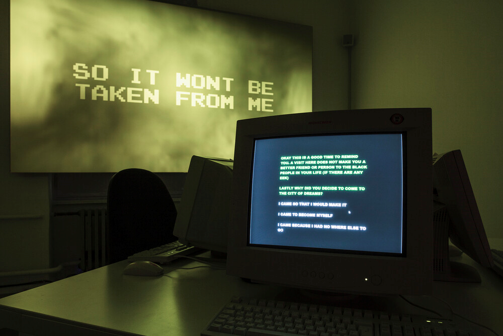

Transmediale, “for refusal”
Sitting at my desk in London in front of my MacBook,
I join a Zoom meeting where I look at four chunky, gray mid-2000s computers arranged on a table in an
exhibition space in Berlin.
The old computers, grouped in a way that brings to mind an internet café...
Orit Gat
28 January - 28 March 2021